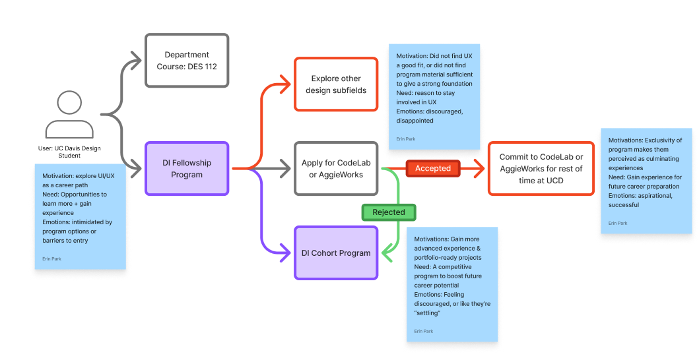

Design Interactive
Brand Redesign

Timeline: June 2025 - September 2025

Tools: Figma, FigJam, Airtable, Instagram Analytics, User Interviews
[CONTEXT]
Design Interactive (DI) is UC Davis’ first human-centered design organization, founded out of a growing demand on campus for UI/UX education and hands-on project opportunities for students exploring the field.
Our program had been struggling with student retention as a result of a contradictory reputation: too unapproachable to feel inviting, yet not prestigious enough to inspire confidence.
[ROLE]
As the team lead for DI’s marketing team, I defined the overall strategy and positioning of our organization’s messaging, delegating a clear timeline for the project to a team of four graphic designers and content creators, and contributing assets as necessary to communicate my vision and support my team.
[RESEARCH]
While our program was a popular option for students first exploring UX, our key weakness was retention– students were leaving our program for other tech organizations perceived to be more prestigious or aspirational.
Existing Visual Identity
Warm, creative visuals emphasizing a welcoming and fun community.
Perception
Vintage and juvenile, conveying a sense of DIY crafts rather than UI/UX design.

How might we adjust our visual identity and messaging to attract motivated designers, while reflecting our mission-driven values of inclusivity, interdisciplinarity, and community?
[SOLUTION]
| Old visual identity felt outdated & childish, and did not clearly communicate UI/UX & professional development focus. | Refresh visual identity to better align with greater tech space on campus while retaining strong visibility and recognizability. | |
| Professional development student orgs have a reputation of exclusivity or competitiveness that discourages beginners from getting involved. |
Align copywriting with a welcoming, warm brand voice.
Showcase authentic student stories through increased videography and photography in content. |
|
| Despite advertising a strong community, DI had difficulty staying connected to its large alumni network. |
Target our different audience segments with tailored content through multiple channels.
Increase emphasis on community building events connecting students with alumni and mentors. |
Updated Visual Identity
- Assets inspired by digital design interfaces like bounding boxes and cursor chats.
- Gradient, layered graphics better align with current industry trends and add movement + depth.
- Increased use of photography to promote community.
[IMPACT]
- 40% increase in applications to flagship Cohort program since last recruitment cycle, a 150% increase over two cycles
- 3 x more industry mentor led workshops than last quarter
- 120+ Fellowship program participants
Thanks for reading!
View Additional Projects